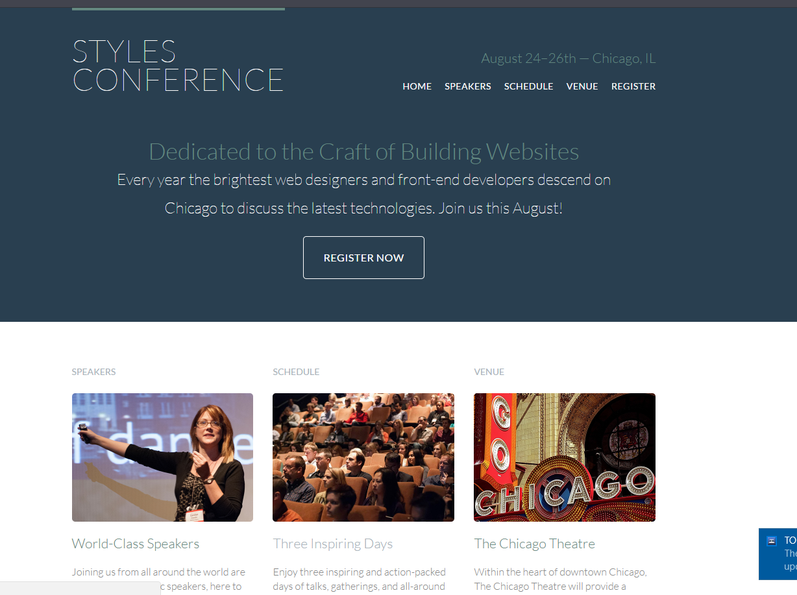
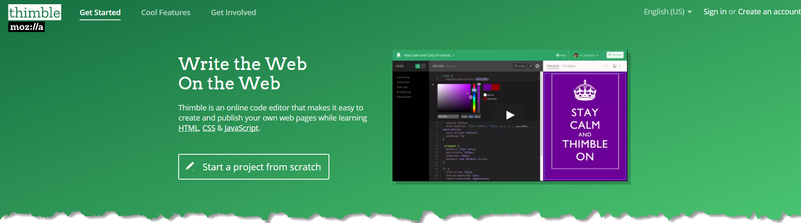

In today's lesson and with our lessons moving forward we're going change the focus and the tools that we used before to create a web page.
Instead of creating an "About Me" page, we are going to create an "Styles Conference" web page using the following tutorial: Learn to Code HTML Á CSS. I selected this tutorial because it will walk you through building out a web page in the form of 12 lessons which explain HTML, CSS, and typograhy using code examples. In each of the lesson you will find links at the end for further reading. Once you're done with this tutorial you will have the knowledege to build a web page on your own. You can use your new skills to begin creating websites and web apps.

Continue working on your "About Me" page. These types of pages provide information about you and\or your company. You can also use this page in the next website you'll create. Every website has one. Check out:
The website that we will be using to build our Styles Conference web page provides 12 lessons explaining in depth html, css, and typograhy. You're more than welcome to complete all 12 lessons on your own, but I think it would be beneficial to your learning that together we tackle 2-3 lessons at a time to ensure that you understand and retain the information.
The web editor that we will use going forward is a web editor called Thimble Mozilla.
I chose this web editor because most of the assignments that are included in this tutorial will require us to create folders and upload images, which
is where Plunker falls short. Before you can start using Thimble Mozilla, you each must create an account.

Creating a Thimble Mozilla account will require you to provide an email address. If you don't have an email address, then you can create one with your parent(s). I recommend choosing either a Gmail account or an Outlook account. Click on the following link which will take you to the page to create your Thimble Mozilla account: Create Thimble Mozilla.
Provided below are links to your first three assignments with additional reading resources to review:
Once you've completed the 3 lessons, your web page should look like this....